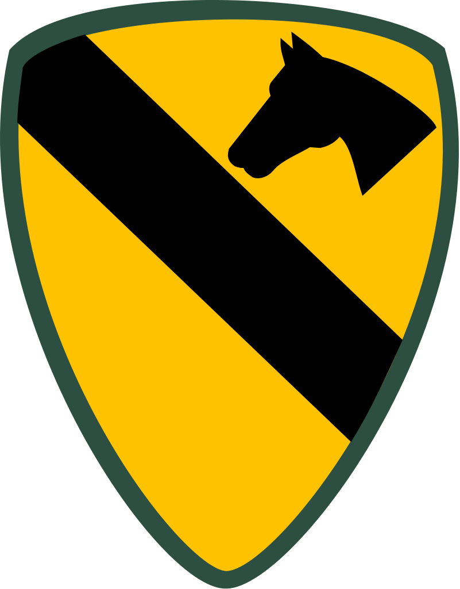

Apocalypse Now is a 1979 American epic war film directed, produced, and co-written by Francis Ford Coppola. It was co-written by John Milius with narration written by Michael Herr. It stars Marlon Brando, Robert Duvall, Martin Sheen, Frederic Forrest, Albert Hall, Sam Bottoms, Larry Fishburne, and Dennis Hopper. The screenplay, written by Milius, adapts the story of Joseph Conrad's novella Heart of Darkness, changing its setting from late nineteenth-century Congo to the Vietnam War.[4] It draws from Herr's Dispatches and Werner Herzog's Aguirre, the Wrath of God (1972). The film revolves around Captain Benjamin L. Willard (Sheen), who is on a secret mission to assassinate Colonel Kurtz, a renegade Army officer who is presumed insane.
The Captain
Benjamin L. Willard
I have joined the US Special Forces back in the 1960's so as to fight communism. After 5 years of service at Homeland Security I have been sent to Saigon, as things got out of control in Nam. My task was to find Colonel Kurtz and terminate his command.
Along the way I met the face of Horror in its purest, most crytalline form. I knew I was alive because he wanted me that way. He wanted a soldier to take his life, he wanted to die like a Colonel, not like some four star clown, not like a war pig.
I love the smell of napalm in the morning!
Lt. Col. William "Bill" Kilgore
Lieutenant Colonel William "Bill" Kilgore, 1st Squadron, 9th Air Cavalry Regiment commander and surfing fanatic. Kilgore is a strong-willed leader who loves his men but has methods that appear out-of-tune with the setting of the war. His character is a composite of several characters including Colonel John B. Stockton, General James F. Hollingsworth (featured in The General Goes Zapping Charlie Cong by Nicholas Tomalin), and George Patton IV, also a West Point officer whom Robert Duvall knew.

Kilgore is first introduced when Willard arrives at the end of an attack he had made on a North Vietnamese village. Willard asks him for assistance in getting into the Nung River, but Kilgore is too busy focusing on his own activities. Eventually, Kilgore and his men began partying during the night, before he remembered Willard's mission. The two soon began discussing the best entry point. Kilgore was initially reluctant to enter a heavily guarded point until one of his men stated that it was a good spot for surfing.
The next morning, Kilgore led a whole squadron of helicopters towards a Viet Cong outpost at the entrance to the Nung River, playing Ride of the Valkyries as he destroyed it. Once the helicopters had landed Kilgore's men soon began surfing, while Willard and his crew left in their boat.